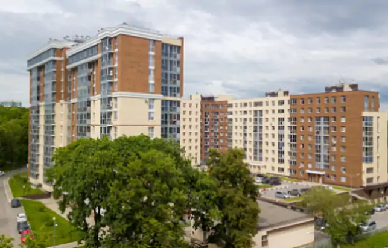

Нижний Новгород
Анкудиевский парк
Жилой комплекс, представленный в официальном портфолио Poritep. Газобетон используется в современной многоэтажной застройке и помогает создавать однородный тёплый контур.
Подобрать блоки для проектаЧастные дома, жилые комплексы и общественные здания, в которых применён автоклавный газобетон Poritep.
Жилой комплекс, представленный в официальном портфолио Poritep. Газобетон используется в современной многоэтажной застройке и помогает создавать однородный тёплый контур.
Подобрать блоки для проекта
Пример применения Poritep в индивидуальном доме с выразительной архитектурой и энергоэффективной оболочкой.

Объект из официального портфолио бренда, демонстрирующий применение газобетона в крупном строительстве.

Газобетон Poritep применяется для стеновых решений в жилых проектах, где важны геометрия кладки, скорость работ и стабильные характеристики материала.
Перейти в каталогНазвания и фотографии объектов взяты с официального сайта Poritep.